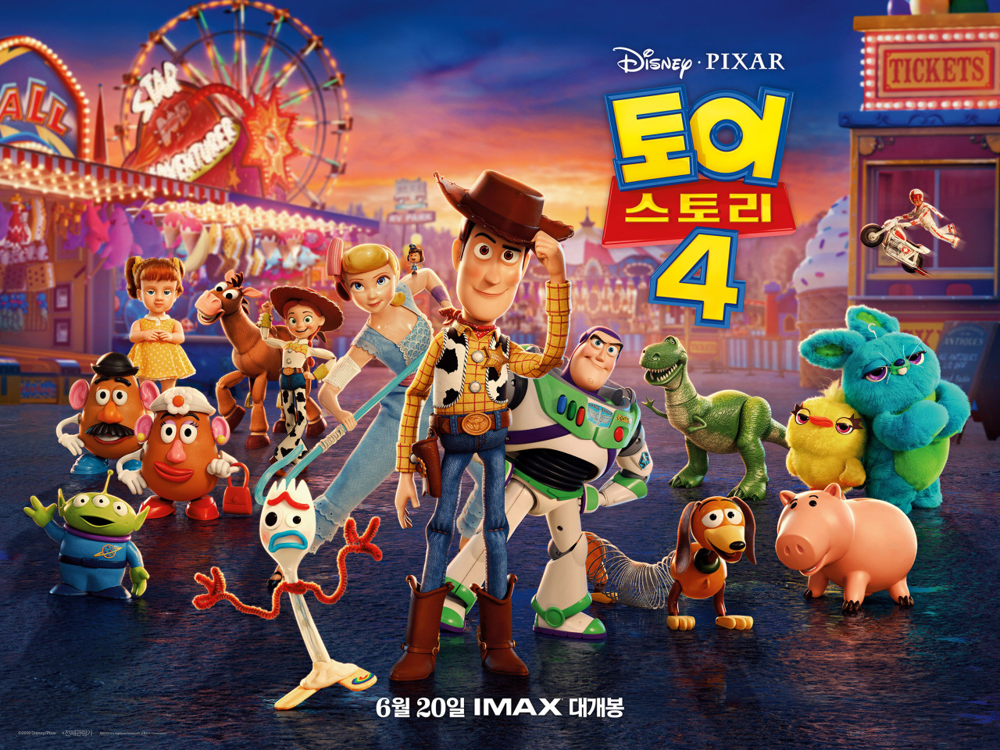
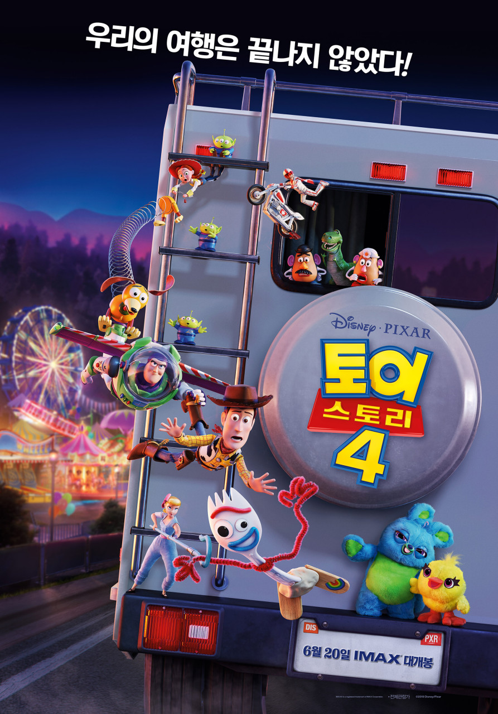
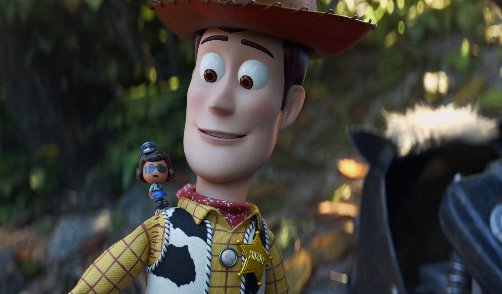

Synopsis
Woody has always been confident about his place in the world and that his priority is taking care of his kid, whether that’s Andy or Bonnie.But when Bonnie adds a reluctant new toy called “Forky” to her room, a road trip adventure alongside old and new friends will show Woody how big the world can be for a toy.
-

- 
- 
Woody
Woody is the same pull-string cowboy sheriff that Andy fell in love with years ago.He’s found a new home with Bonnie and her toys, and he’ll do anything to make sure she’s happy and they’re all taken care of.
But an unexpected reunion with his dear friend Bo Peep shows Woody that the world is much bigger than he ever imagined.
- 
Buzz Lightyear
Buzz Lightyear is loyal not only to his owner, but to the friends he’s made along the way—especially his once-rival Woody who’s like a brother to the ace Space Ranger these days.Buzz would do anything to support his pull-string buddy, but when his efforts land him in a carnival game booth as an inadvertent prize, he turns to his inner voice for guidance.
Forky
Forky is not a toy! At least that’s what he thinks.An actual spork-turned-craft-project, Forky is pretty sure that he doesn’t belong in Bonnie’s room.
Unfortunately, every time he tries to get away, someone yanks him back into an adventure he’d rather skip.
Bo Peep
Bo Peep is a long-lost friend of Woody, Buzz and the gang, who always shared a special connection with Woody while residing with her sheep on a lamp base at Andy’s house.After being separated for years, Bo has become chipped and discarded, but her spirit is far from broken.
She has grown into an adventure-seeking free spirit whose strength and sarcasm belie her delicate porcelain exterior.
When she and Woody are reunited under unlikely circumstances, Bo realizes just how much she’s missed him, and can’t wait to show him what she’s been up to.
Gabby Gabby
Gabby Gabby is an adorable, talking pull-string doll from the 1950s.But unfortunately for her, a manufacturing defect in her pull-string voice box has left her sounding anything but adorable.
She has spent more than 60 years forgotten in the depths of a jam-packed antique store—her only companions are a band of voiceless ventriloquist dummies.
Gabby Gabby knows someone will want her if only she can find a working voice box to repair hers.
Ducky and Bunny
Ducky and Bunny are carnival prizes who are eager to be won.But when their plans are rudely interrupted, they find themselves on an unexpected adventure with a group of toys who have no idea what it feels like to be tacked to a prize wall.
Duke Caboom
Duke Caboom is a 1970s toy based on Canada’s greatest stuntman.Riding his powerful Caboom stunt-cycle, Duke is always prepared to show off his stunt poses with confidence and swagger.
However, Woody learns quickly that Duke has an Achilles heel: He has never been able to do the awesome stunts advertised in his own toy commercial.
For years, Duke has been sitting in an antique store, constantly reliving the failures of his tragic past.